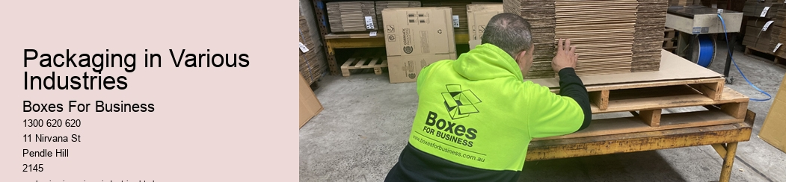

Boxes For Business
News
Types of Cardboard Boxes
Types of Cardboard Boxes
Corrugated Boxes
Folding Carton Boxes
Manufacturing Process of Cardboard Boxes
Manufacturing Process of Cardboard Boxes
Raw Material Acquisition and Preparation
Box Designing and Production
Uses of Cardboard Boxes
Uses of Cardboard Boxes
Packaging in Various Industries
DIY Projects Using Cardboard
About Us
Contact Us

Packaging in Various Industries
Packaging in Various Industries
Title: The Role of Packaging in Various Industries
The term "packaging" is a familiar word that many associate with the wrapping or container that comes with products we purchase. However, its significance goes beyond mere physical appearance. Packaging plays an integral role in various industries, enhancing product safety, marketing strategies, and customer convenience.
In the food industry, packaging serves as a critical tool for preserving freshness and extending shelf life. It reduces exposure to environmental conditions such as heat and moisture that can affect product quality and safety. Innovations like vacuum-sealed pouches or nitrogen-flushed containers help maintain taste, texture, and nutritional value in foods while preventing spoilage.
Moreover, the pharmaceutical industry depends heavily on packaging for patient safety and medication efficacy. Specific medical regulations require packages to be child-resistant yet easy-to-open for adults-especially elderly users who may have limitations in strength or dexterity. Some drug containers feature time-strips indicating when doses were last taken, ensuring proper dosage intervals are maintained.
Packaging also contributes significantly to branding strategy across all industries. In fashion retailing or electronics manufacturing alike, an attractive package design can capture consumer attention amid competing products on shelves – leading to higher sales volumes. Apple Inc., with its minimalist packaging style mirroring its products' sleek design ethos, provides a prime example of this principle at work.
The beverage industry utilizes package designs not only for aesthetic appeal but also practicality. The shapes of bottles or cans often cater to user comfort during consumption-they are designed to fit nicely into hands or cup holders in cars while being easy-to-open.
The importance of packaging extends even further within the logistics sector where it ensures safe transport of goods from manufacturers to retailers then end-users. Durable boxes protect contents from damage during shipping; labels provide crucial information about handling requirements; barcodes enable efficient sorting or tracking throughout supply chains.
Finally yet importantly is the growing emphasis on sustainable packaging solutions across industries-a response to increasing consumer awareness about environmental impacts. Biodegradable or recyclable materials are being used more frequently, and designs are evolving for minimal resource use.
In conclusion, packaging is a multi-faceted tool that goes beyond merely "wrapping up" a product. It fulfills vital roles in maintaining product quality, aiding marketing efforts, enhancing user experience, facilitating logistics operations, and championing sustainability. As industries continue to innovate and evolve in an increasingly competitive global market, the significance of packaging will undoubtedly continue to rise.
Types of Cardboard Boxes
Frequently Asked Questions
How is cardboard used in various industries?
Cardboard is extensively used across several industries including retail, food and beverage, pharmaceuticals, electronics, and more because of its strength, lightness, recyclability and cost-effectiveness.
Why are cardboard boxes commonly used for packaging in many industries?
Cardboard boxes are favored due to their versatility. They can be customized into any shape or size to suit the products needs. Moreover, they offer good protection to the products inside them and they are environmentally friendly as they can be recycled.
What are some examples of industry-specific uses for cardboard boxes?
In the food industry, cardboard boxes could be designed with special coatings or additives to improve water resistance or inhibit bacterial growth. In electronics industry, anti-static boxes may be used for sensitive components. Similarly in pharmaceuticals sector it could be used for packing medicines due to its ability to withstand varying temperatures.
What advancements have been made recently in terms of cardboard packaging technology?
There has been a push towards making more sustainable packaging solutions. Advancements include improved designs that minimize material use while maintaining strength and functionality; biodegradable laminates or coatings; and incorporating recycled materials into new boxes without sacrificing performance.